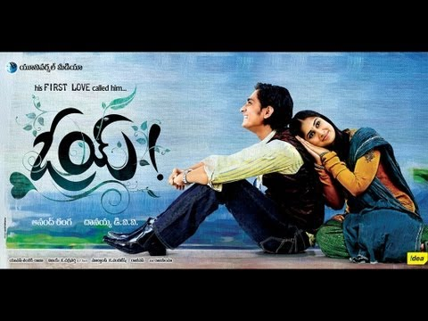

NaaSongs.Com.Co
Oy! (2009)

Oy Cast Crew:-
- Movie Title:-Oy
- Cast Crew:-Siddarth, Shamili
- Music:-Yuvan Shankar Raja
- Director:-Anand Ranga
- Language:-Telugu
- Year:-2009
Oy Audio Songs Free Download
-
Oy! Oy! – Download
Artist:- Siddharth
-
Saradaga – Download
Artist:- Karthik, Sunidhi Chauhan
-
Waiting For You – Download
Artist:- K.K
-
Anukoledenadu – Download
Artist:- Shreya Ghoshal
-
Seheri – Download
Artist:- Krishna Chaitanya, Toshi, Priya
-
Povodhe Prema – Download
Artist:- Yuvan Shankar Raja